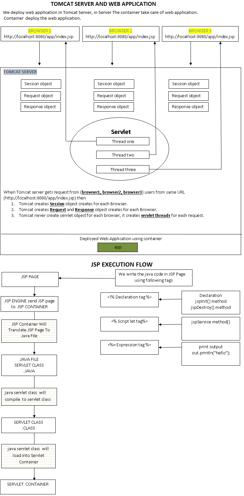
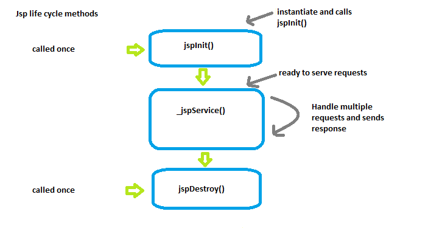
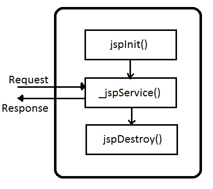
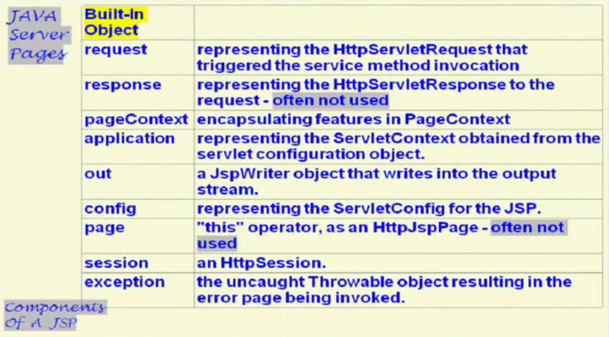
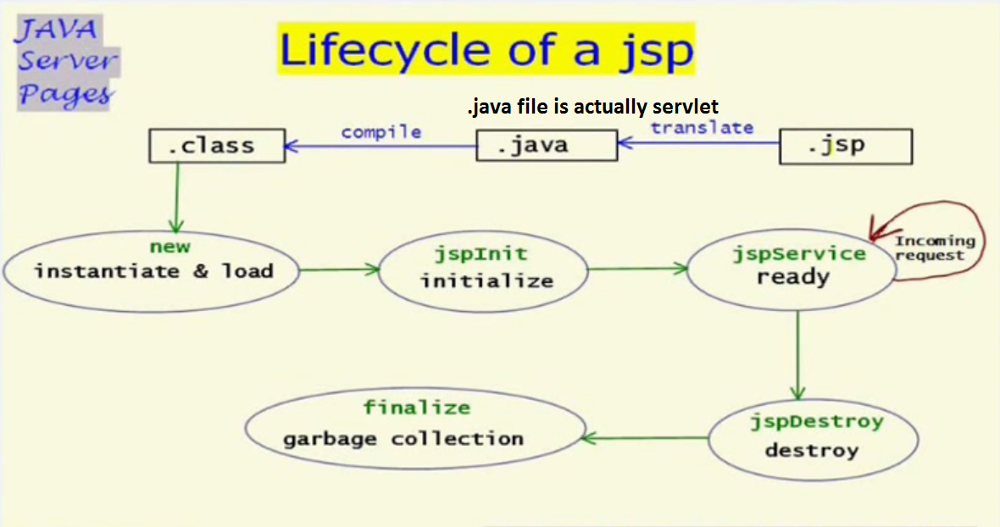
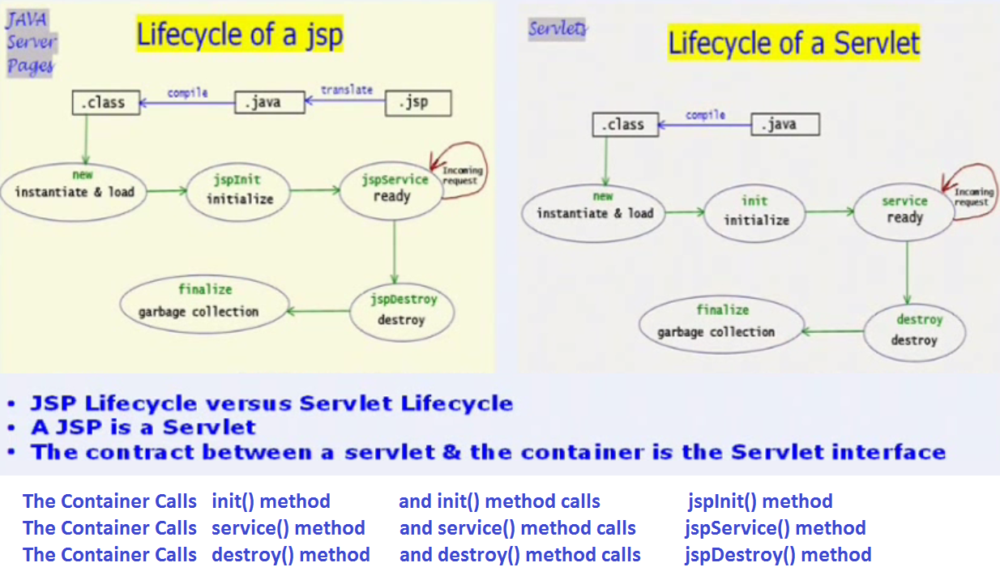
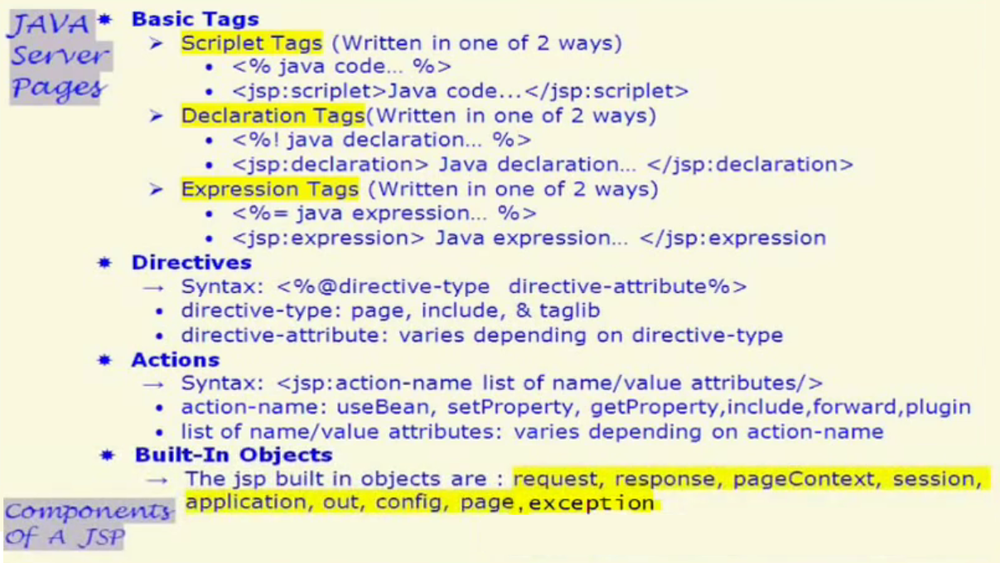
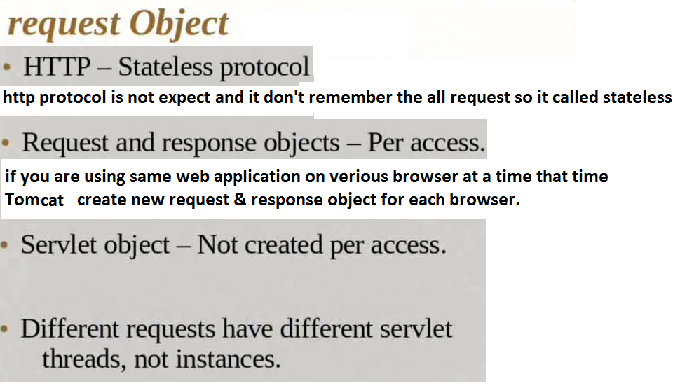
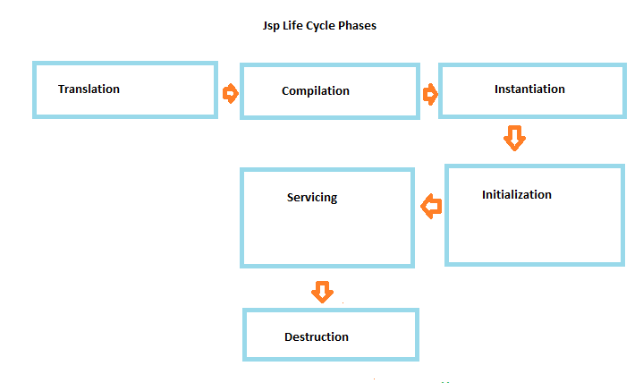

Jsp life cycle
- jsp engine controls the life cycle of jsp
- Jsp life cycle is described by three life cycle methods and six life cycle phases.
Jsp life cycle methods :
- jspInit()
- _jspService()
- jspDestroy()
- Jspinit() method is invoked when JSP page is initialized.
- The _jspService() method corresponds to the body of the jsp page.
- This method is defined automatically by the JSp container and should never be defined y the JSP page author.








Jsp Life cycle Phases:
- Translation phase
- Compilation phase
- Instantiation phase
- initialization phase
- Servicing phase
- Destruction phase

- Jsp engine calls jspInit() method only once during the initialization phase of a jsp.
- similarly during destruction phase jsp engine calls jspDestory() method only once
- For each client request Jsp container calls _jspService() method once.
Jsp Translation phase:
- When client request comes for a jsp for the first time , jsp engine makes a full read of the jsp verifies the syntactical
corectness of the jsp elements and converts code into a servlet source code .
- The process of JSP engine translating jsp into servlet nothing but translation phase of JSP.
- Therefore , we say that Jsp development is another style of development asking container to develop the servlet is nothing but JSP developement
- Container generated servlet class is also known as page implementation class.
Jsp Compilation phase:
- The process of jsp engine compiling the page implementation class is nothing but compilation phase of jsp.
- Jsp engine uses JASPER compiler to compile the container generated servlet class source code.
- In the life of the Jsp Translation and compilation happens only once unless jsp source code modified.
Jsp Instantiation phase:
- Container creating the instance of generated servelt class is nothing but instantialtion phase of jsp
- actually now we have a servelt object.
- Servlet engine loads user user defined servlet class file from secondary memory into
primary memory dynamically
class c= class.forName("name");
c.newInstance();
- Servlet engine creates the instance of loaded servlet class.
- Servlet engine uses the following piece of code to load the servlet clas dynamically to instantiate it.
Class c= class.forName("Servlet class name");
c.newInstance();
Initialization:
- Servlet engine creates servletConfig object
- Servlet engine calls the init() method on the servlet instance by supplying servletconfig object as argument.
- Once init method completely executed servlet is ready to serve the client request.
Servicing :
- Servlet engine creates servlet request and servlet response object based on the web server provided client information.
- Servlet engine calls service method on the servlet instance by supplying two object reference as arguments
- Once service method is completely executed , client request is served and request-response cycle is complete.
- Within the service method request object is used to capture the user input
- Response object is used to build the dynamic page and hand over the same to the web server
Destruction:
- Destruction phase of servlet represents servlet being removed from use by container
Introduction to JSP
- JSP is a server side technology which helps to create a webpage dynamically using java as the programming language.
- JSP is a specification from Sun Microsystems. It is an extension to Servlet API.
- JSP is used for creating dynamic webpages. Dynamic webpages can have two types of contents – static & dynamic content.
- The static contents can have text-based formats such as HTML, XML etc
- the dynamic contents are generated by JSP elements.
Advantages of JSP
- JSP has all the advantages that a servlet has.
it also inherits the the features of java technology like – multithreading, exception handling, Database connectivity,etc.
- JSP Enables the separation of content generation from content presentation. Which makes it more flexible.
- With the JSP, it is now easy for web designers to show case the information what is needed.
- Web Application Programmers can concentrate on how to process/build the information.
JSP
JSP is a server side technology which helps to create a webpage dynamically using java as the programming language.
JSP have access to the entire family of Java APIs.
JavaServer Pages (JSP) is a technology for developing web pages that support dynamic content which helps developers
insert java code in HTML pages by making use of special JSP tags, most of which start with <% and end with %>.
A JavaServer Pages component is a type of Java servlet that is designed to fulfill the role of a user interface
for a Java web application.
JSP - Architecture
The web server needs a JSP engine container to process JSP pages.
The JSP container is responsible for intercepting requests for JSP pages.
A JSP container works with the Web server to provide the runtime environment and other services a JSP needs.
JSP Processing:
- As with a normal page, your browser sends an HTTP request to the web server.
- The web server recognizes that the HTTP request is for a JSP page and forwards it to a JSP engine.
- The JSP engine loads the JSP page from disk and converts it into a servlet content.
- The JSP engine compiles the servlet into an executable class and forwards the original request to a servlet engine.
- A part of the web server called the servlet engine loads the Servlet class and executes it. During execution,
the servlet produces an output in HTML format, which the servlet engine passes to the web server inside an HTTP response.
Servlet Vs JSP
Like JSP, Servlets are also used for generating dynamic webpages. Below is a comparison between them –
Servlets –
- Servlets are Java programs which supports HTML tags too.
- Generally used for developing business layer of an enterprise application.
- Servlets are created and maintained by Java developers.
On the other hand, JSP –
- JSP program is a HTML code which supports java statements too.
- Used for developing presentation layer of an enterprise application
- Frequenly used for desiging websites and used for web designers.
JSP - Life Cycle :
"1) Compilation, 2) Initialization, 3) Execution, 4) Cleanup" are The four major phases of JSP life cycle.
JSP Compilation:
When a browser asks for a JSP, the JSP engine first checks to see whether it needs to compile the page.
If the page has never been compiled, or if the JSP has been modified since it was last compiled,
the JSP engine compiles the page.
The compilation process involves three steps:
1) Parsing the JSP.
2) Turning the JSP into a servlet.
3) Compiling the servlet.
JSP Initialization:
When a container loads a JSP it invokes the jspInit() method before servicing any requests.
If you need to perform JSP-specific initialization, override the jspInit() method.
Typically initialization is performed only once and as with the servlet init method.
JSP Execution:
This phase of the JSP life cycle represents all interactions with requests until the JSP is destroyed.
Whenever a browser requests a JSP and the page has been loaded and initialized, the JSP engine invokes the _jspService() method in the JSP.
The _jspService() method takes an HttpServletRequest and an HttpServletResponse as its parameters.
The _jspService() method of a JSP is invoked once per a request and is responsible for generating the response for that request
and this method is also responsible for generating responses to all seven of the HTTP methods ie. GET, POST, DELETE etc.
JSP Cleanup:
The destruction phase of the JSP life cycle represents when a JSP is being removed from use by a container.
The jspDestroy() method is the JSP equivalent of the destroy method for servlets. Override jspDestroy when you need to
perform any cleanup, such as releasing database connections or closing open files.
JSP - Syntax
1. The Scriptlet Syntax : - <% code fragment %>
A scriptlet can contain any number of JAVA language statements, variable or method declarations,
or expressions that are valid in the page scripting language.
2. JSP Declarations Syntax : <%! declaration; %>
A declaration declares one or more variables or methods that you can use in Java code later in the JSP file.
You must declare the variable or method before you use it in the JSP file.
Example :-
<%! int i = 0; %>
<%! int a, b, c; %>
<%! Circle a = new Circle(2.0); %>
3. JSP Expression Syntax : <%= expression %>
The expression element can contain any expression that is valid according to the Java Language Specification
but you cannot use a semicolon to end an expression.
Example : -
Today's date: <%= (new java.util.Date()).toLocaleString()%>
4. JSP Comments Syntax : <%-- This is JSP comment --%>
JSP comment marks text or statements that the JSP container should ignore.
A JSP comment is useful when you want to hide or "comment out" part of your JSP page.
Example : - <%-- This comment will not be visible in the page source --%>
JSP Directives Syntax :
A JSP directive affects the overall structure of the servlet class.
There are three types of directive tag:
1. <%@ page ... %> : - Defines page-dependent attributes, such as scripting language, error page, and buffering requirements.
2. <%@ include ... %> : - Includes a file during the translation phase.
3. <%@ taglib ... %> : - Declares a tag library, containing custom actions, used in the page
The page Directive:
The page directive is used to provide instructions to the container that pertain to the current JSP page.
1. The buffer Attribute: The buffer attribute specifies buffering characteristics for the server output response object.
You may code a value of "none" to specify no buffering so that all servlet output is immediately directed to the response object
or you may code a maximum buffer size in kilobytes.
Example : - <%@ page buffer="none" %> , <%@ page buffer="8kb" %>
2. The autoFlush Attribute:
The autoFlush attribute specifies whether buffered output should be flushed automatically when the buffer is filled , or whether
an exception should be raised to indicate buffer overflow.
Example : - <%@ page autoFlush="false" %>, <%@ page autoFlush="true" %>, <%@ page buffer="16kb" autoflush="true" %>
3. The contentType Attribute:
The contentType attribute sets the character encoding for the JSP page and for the generated response page.
The default content type is text/html.
Example : -
a) For HTML output : - <%@ page contentType="text/html" %>
b) For XML output : - <%@ page contentType="text/xml" %>
c) For Microsoft Word document :- <%@ page contentType="application/msword" %>
d) You can also specify the character encoding for the response. : - <%@ page contentType="text/html:charset=UTF-8" %>
4. The errorPage Attribute:
The errorPage attribute tells the JSP engine which page to display if there is an error while the current page runs.
Example : - <%@ page errorPage="MyErrorPage.jsp" %>
5. The isErrorPage Attribute:
The isErrorPage attribute indicates that the current JSP can be used as the error page for another JSP.
The value of isErrorPage is either true or false. The default value of the isErrorPage attribute is false.
Example : - To handle the error set isErrorPage option true : - <%@ page isErrorPage="true" %>
6. The extends Attribute:
The extends attribute specifies a superclass that the generated servlet must extend.
Example : - <%@ page extends="somePackage.SomeClass" %>
7. The import Attribute:
The import attribute serves the same function as, and behaves like, the Java import statement.
Example : - To import java.sql.*, use the following page directive : - <%@ page import="java.sql.*" %>
Example : - To import multiple packages : - <%@ page import="java.sql.*,java.util.*" %>
Note : - By default, a container automatically imports java.lang.*, javax.servlet.*, javax.servlet.jsp.*, and javax.servlet.http.*.
8. The info Attribute:
The info attribute lets you provide a description of the JSP.
Example : - <%@ page info="This JSP Page Written By Mayuresh Ratnaparkhi." %>
9. The isThreadSafe Attribute:
The isThreadSafe option marks a page as being thread-safe. By default, all JSPs are considered thread-safe.
If you set the isThreadSafe option to false, the JSP engine makes sure that only one thread at a time is executing your JSP.
Example : - <%@ page isThreadSafe="false" %>
10. The language Attribute:
The language attribute indicates that which programming language is used in scripting the JSP page.
Example : - <%@ page language="java" %>
11. The session Attribute:
The session attribute indicates whether or not the JSP page uses HTTP sessions.
A value of true means that the JSP page has access of session object and
A value of false means that the JSP page cannot access of session object.
Example : - <%@ page isELIgnored="false" %>
12. The isScriptingEnabled Attribute:
The isScriptingEnabled attribute determines if scripting elements are allowed for use.
The default value (true) enables scriptlets, expressions, and declarations.
Example : - <%@ page isScriptingEnabled="false" %>
JSP - Actions : -
JSP actions use constructs in XML syntax to control the behavior of the servlet engine. You can dynamically insert a file,
reuse JavaBeans components, forward the user to another page, or generate HTML for the Java plugin.
Common Attributes:
There are two attributes that are common to all Action elements: the id attribute and the scope attribute.
a) Id attribute: The id attribute uniquely identifies the Action element, and allows the action to be referenced inside the JSP page.
If the Action creates an instance of an object the id value can be used to reference it through the implicit object PageContext
b) Scope attribute: This attribute identifies the lifecycle of the Action element. The id attribute and the scope attribute are directly related,
as the scope attribute determines the lifespan of the object associated with the id.
The scope attribute has four possible values: (a) page, (b)request, (c)session, and (d) application.
1. The <jsp:include> Action : - <jsp:include page="date.jsp" flush="true" />
page attribute : - The relative URL of the page to be included.
flush attribute : - The boolean attribute determines whether the included resource has its buffer flushed before it is included.
This action lets you insert files into the page being generated.
Example:
date.jsp file:
<p>
Today's date: <%= (new java.util.Date()).toLocaleString()%>
</p>
Useages in main.jsp file : -
<center>
<h2>The include action Example</h2>
<jsp:include page="date.jsp" flush="true" />
</center>
2. The <jsp:useBean> Action : - <jsp:useBean id="name" class="package.class" />
The useBean action is quite versatile. It first searches for an existing object utilizing the id and scope variables.
If an object is not found, it then tries to create the specified object.
Once a bean class is loaded, you can use jsp:setProperty and jsp:getProperty actions to modify and retrieve bean properties.
Example :-
/* File: TestBean.java */
package action;
public class TestBean {
private String message = "No message specified";
public String getMessage() {
return(message);
}
public void setMessage(String message) {
this.message = message;
}
}
TestBean.jsp : -
<jsp:useBean id="test" class="action.TestBean" />
<p> Set message...</p>
<jsp:setProperty name="test" property="message" value="Hello JSP..." />
<p>Got message....</p>
<jsp:getProperty name="test" property="message" />
3. The <jsp:forward> Action : - <jsp:forward page="Relative URL" />
The forward action terminates the action of the current page and forwards the request to another JSP page.
Example : - <jsp:forward page="date.jsp" />
JSP - Page Redirecting
Page redirection is generally used when a document moves to a new location.
Example :- PageRedirect.jsp
<%
// New location to be redirected
String site = new String("http://www.computer-home.com");
response.setStatus(response.SC_MOVED_TEMPORARILY);
response.setHeader("Location", site);
%>
output : - Now let us put above code in PageRedirect.jsp and call this JSP using URL http://localhost:8080/PageRedirect.jsp.
This would take you given URL http://www.computer-home.com.
JSP - Auto Refresh :-
A webpage in such a way that it would refresh automatically after a given interval.
Example :- main.jsp
<%@ page import="java.io.*,java.util.*" %>
<html>
<head>
<title>Auto Refresh Header Example</title>
</head>
<body>
<b>
<%
// Set refresh, autoload time as 5 seconds
response.setIntHeader("Refresh", 5);
%>
</b>
</body>
</html>
Output : - After every 5 seconds "main.jsp" file will refresh and will auto load automatically.
JSP FLOW
TOMCAT : is a server
Within a server container will be available.
containter will recognize the all web application
container will deploy the web application in the server.
for each web application servlet context object will be created.
Client browser will send request url to server.
the request url also called protocol.
A protocol will prepared request format and it has two (header & body) parts.
A header part will manage browser meta data, encoding logic,
A body part will manage Application user provided data
A protocol establish socket connection between client and server on the base of
server ip address and server port number.
server will validate the request then request will forward to container and container will identify the web application and
request type.
container will identify the related view (.jsp) file then container loads that .jsp file in to operational memory and
this phase is called as jsp loading. then container will parsing the .jsp file that is called jsp parsing phase, after
that jsp file will translate into servlet class as a java file ( will create .java file) then container will compile
that .java file. this phase is called servlet compilation. this phase will create (.class file). after that servlet
life cycle will be started. Every jsp page runs on the top of servlet.
Servlet life cyle has following parts.
1. Servlet Loading
2. Servlet instantation : - _jspservice() method will be called.
3. Servlet Instlaization : - _jspInit() method will be called.
4. Servlet thread will create
5. Request & Response object will be created
6. Response object has two(header & body) parts.
A header part will have response meta data, encoding logic,
A body part will have response data
Example :-
First.jsp file
1. when we deploy the first.jsp file it will translate into first_jsp.class.
2. first_jsp.class extends from HttpJspBase class.
_jspService(),_jspInit(),_jspDestroy() has methods of HttpJspBase class.
3. HttpJspBase class implements HttpJspPage Interface.
4. HttpJspPage Interface implements JspPage interface.
Important Steps for JSP execution
JSP Execution steps
1. jsp page transalation :- In this steps
1. JSP page will transalate into servlet
2. Servlet executes whenever a request comes from the browser
3. Starts with the very first time a JSP is requested.
4. Parsed for checking the syntax errors
5. Convert into as Servlet source file.
6. includes adding any included files, skipping (JSP,HTML) comments
2. jsp page compailation :- In this steps
1. Servlet is compiled using the javac compiler.
Initialization : -
3. loading class
4. Creating instance (object) of class
5. initialize the instance (object) of class
Then three methods will be called.
1. _jspInit()
2. _jspService()
3. _jspDestroy()
1. Container will load the class and create an instance of that class
2. Calls the jspInit() method only once for a Servlet instance
3. Use for providing initialization information
1. Getting resources.
2. initializing variables
jspInit() method :-
1. Able to access the servlet methods including the getServletConfig.
2. config object is used for providing initialization information in the Servlet
Execution steps called _jspService() method :-
1. It is called for each request
2. Request and Response are the parameters
3. Makes the implicit objects (request,response,session,application,context) available to the JSP page.
Removal of JSP steps called _jspDestroy() method :-
1. Removes the JSP
2. Release and Cleanup the JSP resources.
request.getParameter("parameter"); :- while form will be post POST or form will be use GET method then to access
the all send parameters , we use request.getParameter() method.
GET method :- url paramter
POST method :- post parameter
response.sendRedirect ("url"); :-- It will forward to another view and will destroy previous request object.
Expression language in JSP
There are following Expression attributes in jsp
1. requestScope =request.getparameter();
Example =
request.setAttribute("name","Mayur");
using implict object : - <%=request.getAttribute("name");
using Expression : - ${requestScope.name}
List<String> list=Arrays.asList("One","Two",Three");
request.setAttribute("NumberList",list);
Map<String,Integer> map=new HashMap <String,Integer>();
map.add("One",1);
map.add("Two",2);
map.add("Three",3);
request.setAttribute("NumberMap",map);
${requestScope.NumberList}
${requestScope.NumberList[0]} =One
${requestScope.NumberList[1]} =Two
${requestScope.NumberList[2]} =Three
${requestScope.NumberList[3]} = Blank Space (Empty) :- Expression language handles the errors/exceptions
${requestScope.NumberMap}
${requestScope.NumberMap.One}
${requestScope.NumberMap["One"]}
------------------------------------------------------
2. sessionScope = session.getAttribute();
Example = request.getSession().setAttribute("name","Mayur");
using implict object : - <%=session.getAttribute("name")%>;
using Expression : - ${sessionScope.name}
------------------------------------------------------
3. param= to access url parameter
Example= URL parameter Accessing
URL: - http://localhost:8080/sampleApplication/userName=Mayuresh
using implict object : - %=request.getAttribute("userName");
using Expression : - ${param.userName}
------------------------------------------------------
4. paramValues= to access all url parameters
Example= URL parameter Accessing
URL: - http://localhost:8080/sampleApplication/userName=Mayuresh&address=Anandnagar&city=Pune
using implict object : - %=request.getAttribute("userName");
using Expression : - ${paramValues}
using Expression : - ${param.userName}
------------------------------------------------------
5. headerValues= to access the header values
Example =
using Expression : - ${headerValues}
------------------------------------------------------
6. header= to access particular header
Example =
using Expression : - ${header.host}
JAVA WEB APPLICATION
JSP:-
Default port for all web application is 80
in tomcat the default port is 8080
localhost is a domain name.
WebContent :- WebContent means html,css,jsp,javascript files.
In Web application we found the WebContent folder in that folder
we found WEB-INF folder. in that folder we put all (html,css,jsp,javascript files).
What is Context Root:- while running web application on tomcat or any web server
we gives the project name in url , that is called context root.
Example : - http://localhost:8080/projectname
localhost:- domain name
8080:- portname
projectname:- context root.
What is Servlet: - Servlet is a java class.
servlet has no "main method".
Servlet class extends from javax.servlet.http.HttpServlet.
Example :-
@webServlet(description="A simple servlet", urlPatterns={"/MyservletPath"})
public Class MyServlet extends HttpServlet{
protected void doGet(HttpServletRequest request, HttpServletResponse response) throws ServletException{
System.out.println(" Hello..");
response.getWriter().println("<h3>WELCOME</h3>");
}
doGet and doPost are default methods of servlet class.
doGet and doPost are methods are standard HTTP methods.
@webServlet :- @webServlet is a annotation used to configure servlet
we can configure the servlet using xml configuration in web.xml file.
Example
<servlet>
<servlet-name>appServlet</servlet-name>
<servlet-class>edu.java.MyServlet</servlet-class>
</servlet>
<servlet-mapping>
<servlet-name>appServlet</servlet-name>
<url-pattern>MyservletPath</url-pattern>
</servlet-mapping>
Web.xml : - Web.xml file is a deployment descriptor and it tells to web server to what to render.
What is JSP:- jsp means java server pages. and it actually converts into java class by server(tomcat,weblogic) container.
and every generted class is a servlet.
Every jsp is a differnt way to write a servlet and once you save the jsp and deploy it on server . server container converts
jsp file into servlet.
all declared code within script tags stores in doGet method in servlet.
Whatever you declared code within script declaration tags that store separtly in servlet.
Jsp are nothing but servlet and server(tomcat,weblogic,jboss) converts jsp pages into servlet.
<%!
//This is declaration Tag
public int addNumber(int a, int b)
{
return a+b;
}
%>
<%
//This is script tag
int addition= addNumber(5,5);
out.println("The addition of Two numbers "+addition);
%>
<%= This is script output tag%>
The addition of Two number is<%=addition%><br>
The addition of Two number is<%=addNumber(15,15)%>
<%@ page %> :- is a jsp page directive it used to import all java classes.
The page directive will be applicable for current jsp page.
Example :- <%@ page import="java.util.Date" %>
<b> The date is <%= new Date()%><br>
<%@ include %> :- is a jsp include directive it is used to import another jsp file in current jsp page.
Example <%@ include file="/hello.jsp" %>
(request, session, application ) : - These are implict object in jsp.
pageContext object :- We can set request,session , application object by using pageContext object.
Example
pageContext.setAttribute("Name","JSP"); : - It is default scope (PAGE_SCOPE)
pageContext.getAttribute("Name");
pageContext.setAttribute("requestName","JSP", pageContext.REQUEST_SCOPE);
pageContext.getAttribute("requestName");
pageContext.setAttribute("pageName","JSP", pageContext.PAGE_SCOPE);
pageContext.getAttribute("pageName");
pageContext.setAttribute("applicationName","JSP", pageContext.APPLICATION_SCOPE);
pageContext.getAttribute("applicationName");
pageContext.setAttribute("sessionName","JSP", pageContext.SESSION_SCOPE);
pageContext.getAttribute("sessionName");
pageContext.findAttribute("requestName"); : - it is used to find out declared object variable.
how to create jspInit and InitParams in jsp with web.xml
setting in Web.xml :--
<servlet>
<servlet-name>InitJsp</servlet-name>
<jsp-file>WEB-INF/views/initpage.jsp</jsp-file>
<init-param>
<param-name>defaultName</param-name>
<param-value>Swami Om</param-value>
</init-param>
</servlet>
<servlet-mapping>
<servlet-name>InitJsp</servlet-name>
<url-pattern>WEB-INF/views/initpage.jsp</url-pattern>
</servlet-mapping>
Accessing in Jsp page :-
initpage.jsp :-
The default value from Servlet Config. : - <%=getServletConfig().getInitParameter("defaultName")%>
How to override init method in Jsp :-
<%!
public void _jspInit()
{
String defaultName=getServletConfig().getInitParameter("defaultName");
ServletContext context=getServletContext();
context.setAttribute("defaultName",defaultName);
}
%>
The value of Servlet Context is : - <%= getServletContext().getAttribute("defaultName")%>
Difference between ServletConfig and ServletContext
ServletConfig :- tomcat passes passes it when servelet object create and can read all configured parameter from web.xml file.
ServletContext : - it is a scope object like (request,session) and will be applicable for accross the application.
JSP INTERVIEW
What is Servlet
Java Servlet is server side technologies and gives support for dynamic response and data processing.
The javax.servlet and javax.servlet.http packages provide interfaces and classes for writing our own servlets.
All servlets must implement the javax.servlet.Servlet interface, which defines servlet lifecycle methods.
The HttpServlet class provides methods, such as doGet() and doPost(), for handling HTTP-specific services.
Servlet Container
Servlet containers are also known as web container
Servlet Container provides easy way of communication between web client (Browsers) and the servlets.
Servlet Container takes care of managing the life cycle of servlet. From the loading of servlets into memory,
initializing servlets, invoking servlet methods and to destroy them. Container also provides utility like JNDI
for resource pooling and management.
Container creates new thread for every request to the servlet and provide them request and response objects to process.
Every JSP in the application is compiled by container and converted to Servlet and then container manages them like other servlets.
What is ServletConfig object?
javax.servlet.ServletConfig is used to pass configuration information to Servlet.
Every servlet has it’s own ServletConfig object and servlet container is responsible for instantiating this object.
What is ServletContext object?
javax.servlet.ServletContext interface provides access to web application parameters to the servlet.
The ServletContext is unique object and available to all the servlets in the web application.
difference between ServletConfig and ServletContext?
Some of the differences between ServletConfig and ServletContext are:
ServletConfig is a unique object per servlet whereas ServletContext is a unique object for complete application.
ServletConfig is used to provide init parameters to the servlet whereas ServletContext is used to provide application level init parameters
that all other servlets can use.
We can’t set attributes in ServletConfig object whereas we can set attributes in ServletContext that other servlets can use in their implementation.
What is Request Dispatcher?
RequestDispatcher interface is used to forward the request to another resource that can be HTML, JSP or another servlet in same application.
We can also use this to include the content of another resource to the response. This interface is used for inter-servlet communication in the same context.
There are two methods defined in this interface:
void forward(ServletRequest request, ServletResponse response) – forwards the request from a servlet to another resource
(servlet, JSP file, or HTML file) on the server.
void include(ServletRequest request, ServletResponse response) – includes the content of a resource (servlet, JSP page, HTML file) in the response.
We can get RequestDispatcher in a servlet using ServletContext getRequestDispatcher(String path) method.
The path must begin with a / and is interpreted as relative to the current context root.
How do we call one servlet from another servlet?
We can use RequestDispatcher forward() method to forward the processing of a request to another servlet. I
f we want to include the another servlet output to the response, we can use RequestDispatcher include() method.
What are the phases of servlet life cycle?
We know that Servlet Container manages the life cycle of Servlet, there are four phases of servlet life cycle.
Servlet Class Loading – When container receives request for a servlet, it first loads the class into memory and calls it’s default no-args constructor.
Servlet Class Initialization – Once the servlet class is loaded, container initializes the ServletContext object for the servlet and then invoke
it’s init method by passing servlet config object. This is the place where a servlet class transforms from normal class to servlet.
Request Handling – Once servlet is initialized, its ready to handle the client requests. For every client request, servlet container spawns a
new thread and invokes the service() method by passing the request and response object reference.
Removal from Service – When container stops or we stop the application, servlet container destroys the servlet class by invoking it’s destroy() method.